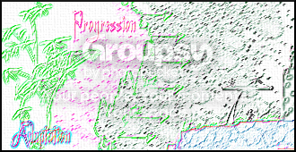

I would like to join. my actual name on NUMA for me is BlckNWhteNnja (due to me being retarded when i registered for this lol)
I, BlckNWhteNnja, pledge to rate as many unrated maps as I can, no matter how boring or badly designed they may be.
How can i get one of those banners?
How can i get one of those banners?
I posted a demo and im in
Actual name is BlckNWhteNnja
Actual name is BlckNWhteNnja
Here I will start tallying up what map packs people like. Sort of like the rating system on NUMA, but for packs instead of individual levels.
I would like it if you voted on:
Stringibility, If the maps flow well together.
You can post reasons for this, such as the tiles go together well and other such things.
Gameplay, You know this...
Concepts, If something was presented to you differently than before, such as enemy placements or other things.
and Difficulty, maybe you like harder levels, or maybe you like less challenging levels.
(I may keep a separate column for this, You know tell if it is less challenging or not.)
Start posting rates and I will start to arrange the packs.
And the packs will be arranged in ABC order for convience.
So Far:
Conceptual : 1
Flowy/Race Style : 2
I would like it if you voted on:
Stringibility, If the maps flow well together.
You can post reasons for this, such as the tiles go together well and other such things.
Gameplay, You know this...
Concepts, If something was presented to you differently than before, such as enemy placements or other things.
and Difficulty, maybe you like harder levels, or maybe you like less challenging levels.
(I may keep a separate column for this, You know tell if it is less challenging or not.)
Start posting rates and I will start to arrange the packs.
And the packs will be arranged in ABC order for convience.
So Far:
Conceptual : 1
Flowy/Race Style : 2
I rate lots of SkyRays
http://numa.notdot.net/map/124649
http://numa.notdot.net/map/124647
http://numa.notdot.net/map/124488
First is survival, Second is Rocket Map, and Third is My best Map
http://numa.notdot.net/map/124649
http://numa.notdot.net/map/124647
http://numa.notdot.net/map/124488
First is survival, Second is Rocket Map, and Third is My best Map
Rated SkyRay's ^
http://numa.notdot.net/map/124803
Also SkyRay if you read this I am actually BlckNWhteNnja if you didn't already know that.
http://numa.notdot.net/map/124803
Also SkyRay if you read this I am actually BlckNWhteNnja if you didn't already know that.
"GOOD GOLLY! This just looks swell, Kimmie! You can count me in!"
Im in!
Rated some of those ^
Zizazzle, Sci, Zyber, and Two Hunny.
And SkyRay, on NUMA you can call me blacky if you really want to. I don't find it racist lol.
http://numa.notdot.net/map/124811
http://numa.notdot.net/map/124578
Zizazzle, Sci, Zyber, and Two Hunny.
And SkyRay, on NUMA you can call me blacky if you really want to. I don't find it racist lol.
http://numa.notdot.net/map/124811
http://numa.notdot.net/map/124578
Rated some of DDRave's ^
http://numa.notdot.net/map/124889
http://numa.notdot.net/map/124107
http://numa.notdot.net/map/123943
http://numa.notdot.net/map/124889
http://numa.notdot.net/map/124107
http://numa.notdot.net/map/123943
I believe there are only two Bitesizable maps I have made in my N career so far:
http://numa.notdot.net/map/124488
http://numa.notdot.net/map/123943
I think they are but as you guys have been saying, I don't have the privelidge so I shouldn't be the judge of this.
http://numa.notdot.net/map/124488
http://numa.notdot.net/map/123943
I think they are but as you guys have been saying, I don't have the privelidge so I shouldn't be the judge of this.
Rated SkyRays new ones,
Just rate some of the ones i have above.
Just rate some of the ones i have above.
Rated both of OneSevenNine's
-And I have to say that chaingun use was one of the best I have seen-
http://numa.notdot.net/map/125135
http://numa.notdot.net/map/124889
http://numa.notdot.net/map/124811
http://numa.notdot.net/map/124488
-And I have to say that chaingun use was one of the best I have seen-
http://numa.notdot.net/map/125135
http://numa.notdot.net/map/124889
http://numa.notdot.net/map/124811
http://numa.notdot.net/map/124488
commented the chaingun one.
http://numa.notdot.net/map/124803
need some because it has none lol, but someone decided to rate.
http://numa.notdot.net/map/124803
need some because it has none lol, but someone decided to rate.
Rated both of handofgod's
http://numa.notdot.net/map/124650
http://numa.notdot.net/map/125135
http://numa.notdot.net/map/124811
http://numa.notdot.net/map/124803
http://numa.notdot.net/map/124647 (and if you do this one plz comment, i have 2 rates no comments)
http://numa.notdot.net/map/124650
http://numa.notdot.net/map/125135
http://numa.notdot.net/map/124811
http://numa.notdot.net/map/124803
http://numa.notdot.net/map/124647 (and if you do this one plz comment, i have 2 rates no comments)
xaelar i want to be on his team but i can't seem to get 140 i got up to 137, am i only in if i get that?
I'm not saying that you should accept me, but I want to know if I should even try because I can't get past the induction. I know im not that good at highscoring, but I feel like there aren't enough people on each team and the map that xaelar has is the only one that I can even come close on. Don't accept me if you don't think i will do any good.
Hey thanks xaelar 
I'm going to start training because i need to get better at highscoring. Thanks for letting me join the team. I hope I won't be a burden. Will do my best as a ninja lol
I'm going to start training because i need to get better at highscoring. Thanks for letting me join the team. I hope I won't be a burden. Will do my best as a ninja
lolSkyRay never put up a map lol 
I guess I will put up another so we can start again lol.
http://numa.notdot.net/map/125476
SkyRay you can probably just pm him or find someone who can.
I guess I will put up another so we can start again lol.
http://numa.notdot.net/map/125476
SkyRay you can probably just pm him or find someone who can.
It is impossible for it not to reach one or the other, since we have 19-8 for seeding then if the 5 go against seeding then we won't have it because there will be 13 against. So it is an impossiblilty to not have it reach 20 for seeding or 13 for not seeding.
Hopefully someone will see this and read it.
You don't have to vote like they^^ did.
It was more like either for your category or for a single persons map pack.
Can an admin close this if it doesn't get anyposts in a week or something?
You don't have to vote like they^^ did.
It was more like either for your category or for a single persons map pack.
Can an admin close this if it doesn't get anyposts in a week or something?
commented OneSevenNine's and if anyone is looking for a close style level, play his.
http://nmaps.net/125476
http://nmaps.net/125476
Dead_N that might be beause your tileset data is corrupt because you have too many #s or too little numebrs, It used to do that with me on the old numa. So relook at your map data and look for breaks or other things.
Edit: failed to read kkstrongs post on the player mods. Even so if that happens you should check the data. Hope this gets fixed soon.
Edit: failed to read kkstrongs post on the player mods. Even so if that happens you should check the data. Hope this gets fixed soon.
Hey Kimmie! im ready when crappitrash is ready.
This is gona be easy.....
This is gona be easy.....
Kimmie I have a problem.
Crappitrash hasn't started yet because I believe his is still on his trip, but i feel like he will come back soon.
I might not have internet for the next 5 days, so if you could, would you postpone me and crappi's start until 6/2/08 because that is when I will be back.
If i have access during this time, I will PM or post on this that I can still go this week.
THX
BnWN
Crappitrash hasn't started yet because I believe his is still on his trip, but i feel like he will come back soon.
I might not have internet for the next 5 days, so if you could, would you postpone me and crappi's start until 6/2/08 because that is when I will be back.
If i have access during this time, I will PM or post on this that I can still go this week.
THX
BnWN
i'd join
Hey Kimmie i have internet access here, wont be able to get on during the day.
I will be able to be on at night though.
I guess i will have to wait anyways.
He must be on his trip still.
I will be able to be on at night though.
I have just sent a PM to all players in red except for crappitrash (He has a reason and will be back soon ).
I guess i will have to wait anyways.
He must be on his trip still.
Im TOTALLY in.
*Remove Please*[/u]
Please delete this post.
I can't even believe I beat my level, hope crappitrash doesn't beat my score lol. He is pretty good at this highscoring stuff.
I just read through the 12 pages of this topic and found out nothing on the subject. Please can someone either pin or lock this topic. It makes no difference whether they are a couple or not. Would everyones life be drastically altered if they were. No. Can a mod or admin please lock this. 3 years is enough. Mare and Raigan are living life to the fullest and are enjoying themselves. Isn't that enough for us.
Sorry for ressurecting the topic, but someone was going to do it at some point.
Sorry for ressurecting the topic, but someone was going to do it at some point.
You are right LV I shouldn't have brought back a topic that was resting peacefully. They are having a good time and this topic is a tribute to that. Sorry about my last post, it was distastful. Let this topic rest in peace or be full of replies. 
My ultimate achievement is when younger mappers look up to me for guidance.
That is when I know I have made an impact.
Also one has already come tru. People actually like my maps, and when the Blizz told me he liked most of them a lot that really moved me. So find some young mappers to be my groupies and I'll be good.
That is when I know I have made an impact.
Also one has already come tru. People actually like my maps, and when the Blizz told me he liked most of them a lot that really moved me. So find some young mappers to be my groupies and I'll be good.
Umm I'm not really new here, but I haven't posted in this saying im new so here goes.
I've been on NUMA since Christmas, and found these forums in April.
I have a lot of maps for that time (around 40)
Apparently my acronym is BNW.
I just want you guys to say welcome to the forums.
I've been on NUMA since Christmas, and found these forums in April.
I have a lot of maps for that time (around 40)
Apparently my acronym is BNW.
I just want you guys to say welcome to the forums.
sorry turtle my NUMA name is BlckNWhteNnja (click on my sig)
so some people call me BNW (black and white)
so some people call me BNW (black and white)
can someone compile a drone mod list? plz shoot me if someone already has.
I'm in on this, I love one path maps.
Yet, i believe myself to not be a noob.
Yet, i believe myself to not be a noob.
Orange I can't believe you put this on here. That battle was epic!
I think that maestro was getting mad when you started making this up in the IRC.
To anyone who wants to know, this was a story that Orange was telling about fractal and Impulse on the IRC, but when Impulse got mad about it, Orange changed it to maestro, yet he wouldn't have anything to do with it, so Orange selected me and went about finishing it. Just don't take it to literally. We were having fun and Orange just wants to share it.
I think that maestro was getting mad when you started making this up in the IRC.
To anyone who wants to know, this was a story that Orange was telling about fractal and Impulse on the IRC, but when Impulse got mad about it, Orange changed it to maestro, yet he wouldn't have anything to do with it, so Orange selected me and went about finishing it. Just don't take it to literally. We were having fun and Orange just wants to share it.
Now when you say linear do you mean only one path or a clear defined path?
Say I had a room and there was 4 switches to get to the next part of the level. Would I have to make it so you only get the switches in a certain order or is there room for innovation there?
Say I had a room and there was 4 switches to get to the next part of the level. Would I have to make it so you only get the switches in a certain order or is there room for innovation there?
Dead_N
Sums up the game doesn't it.....
8/10
Sums up the game doesn't it.....
8/10
Your Sig is ballin Mazemaker.
9/10
9/10
People Watching - Jack Johnson
Lately
All the albums of Eric Johnson
All Jack Johnson
Avenged Sevenfold
Signal Seven (my guitar teacher)
Red Hot Chili Peppers
Led Zeppelin
Collective Soul
Wu-Tang Clan
All That Remains
Lamb of God
Trivium
Rise Against
Beethoven
Nickel Creek
Some Metallica
System of a Down
Trans-Siberian Orchestra
Pretty Diverse
All the albums of Eric Johnson
All Jack Johnson
Avenged Sevenfold
Signal Seven (my guitar teacher)
Red Hot Chili Peppers
Led Zeppelin
Collective Soul
Wu-Tang Clan
All That Remains
Lamb of God
Trivium
Rise Against
Beethoven
Nickel Creek
Some Metallica
System of a Down
Trans-Siberian Orchestra
Pretty Diverse
I've been playing for about 6 years now.
I'm not up to par with Borealis, but from my experience I could tell you that going with a nice Martin or Taylor isn't bad. If you go martin get a body thats mostly one type of wood. Rosewood fret boards are real nice. Always playing before you buy is key. Now if you go with other guitars, you could try a nice Alvarez. Personally I have a 30 year old Alvarez that sounds divine. Just buy what feels good on your hands and what you think sounds nice. Acoustics normally if high priced (because it doesn't sound like you have a problem) won't dissapoint if you play them before you buy.
Yet, I am mostly an electric player.
I'm not up to par with Borealis, but from my experience I could tell you that going with a nice Martin or Taylor isn't bad. If you go martin get a body thats mostly one type of wood. Rosewood fret boards are real nice. Always playing before you buy is key. Now if you go with other guitars, you could try a nice Alvarez. Personally I have a 30 year old Alvarez that sounds divine. Just buy what feels good on your hands and what you think sounds nice. Acoustics normally if high priced (because it doesn't sound like you have a problem) won't dissapoint if you play them before you buy.
Yet, I am mostly an electric player.
Awww man, I already made 2 maps for the other theme.
It wasn't that hard if you looked up some of his stuff.
I made a map that consisted of sock shaped tiles and one of his sculptures was a 3part x. I incorporated all that into this map.
Anyways, the new theme will be easier so Thanks .
It wasn't that hard if you looked up some of his stuff.
I made a map that consisted of sock shaped tiles and one of his sculptures was a 3part x. I incorporated all that into this map.
1111110;1<000000000000011111=011100;11111<000011900001110011111110000OO0000011180:111111000011000001111N1006111000000000001111N1000OOO00000000000:111N100011100000000000000000000000000011000000000000000000000QQ000000000000000000000118000;1<0000000;1<000011111<111000000011100001111111110000000111000011111=111800000711100000000001111N101P111100001110001111N101P11110000QQQ000:111N101P111=000011100000000000000;111N1111000000000000001111N1111000000000000001111N111=0000000000000011190000003400340000000111000000311431140000001110000002111111111111<:1=000000021111511111110000000000311150111111=0000000003111500111900000;1<00002115000OOO0000001110000025000011100000011100000000000000000000111800000000000000000001111|5^420,564!0^96,288!0^84,288!0^72,288!0^60,288!0^48,288!0^372,84!0^372,60!0^372,36!0^372,72!0^372,48!0^36,180!0^48,180!0^60,180!0^156,48!0^168,48!0^180,48!0^192,48!0^204,48!0^672,564!0^684,564!0^696,564!0^708,564!0^720,564!9^156,372,0,0,15,13,1,-1,0!9^108,108,0,0,16,13,1,-1,0!9^252,108,0,0,17,13,1,-1,0!9^84,528,0,0,18,13,1,-1,0!9^396,528,0,1,11,20,0,-1,0!4^228,570,1!0^420,528!0^372,528!0^108,528!0^60,528!12^276,492!12^180,492!12^276,396!12^180,396!12^276,252!12^276,156!12^36,276!12^588,516!12^660,420!12^564,420!12^660,468!9^72,180,1,1,7,4,0,0,0!12^228,84!12^132,84!3^198,294!3^102,78!10^678,258!12^528,240!12^528,144!12^576,96!12^672,96!12^720,144!6^564,420,3,0,0,3!11^540,564,636,252!0^600,36!0^612,36!0^624,36!0^636,36!0^648,36!0^672,360!0^684,360!0^696,360!0^672,372!0^672,384!10^438,270!6^372,156,3,0,0,0!6^732,84,5,0,2,NaN
Anyways, the new theme will be easier so Thanks
.I cranked this out Futuristic Infiltration
I don't know how you pick countries but I want to be apart of this.
Quote1) *first choice of country
2) *second choice of country
3) *third choice of country
1 *Canada
2 *Brazil
3 *Egypt
Thanks
It is too bad that it wasn't finished.
Blizz really wanted to finish Map Theory.
Great guide though, I learned a lot from it that I knew but wasn't in tune with.
Blizz really wanted to finish Map Theory.
Great guide though, I learned a lot from it that I knew but wasn't in tune with.
I want to join.
(I think I'm in 6 competitions now )
)
(I think I'm in 6 competitions now
)As of right now:
Ninja - 1793
Mines - 5429
Floorchaser - 1049
Gauss Turret - 1717
Homing Turret - 1926
Chaingun - 453
Laser Drone - 657
Zap Drone - 3386
Thwumps - 1156
Total - 17566
Not that Many, but considering I've only played N since Christmas, thats about 105 per day.
Ninja - 1793
Mines - 5429
Floorchaser - 1049
Gauss Turret - 1717
Homing Turret - 1926
Chaingun - 453
Laser Drone - 657
Zap Drone - 3386
Thwumps - 1156
Total - 17566
Not that Many, but considering I've only played N since Christmas, thats about 105 per day.
Turtle, do you think you could edit the names as to show that the demo they sent it worked. I don't know if mine worked or if it didn't. That would be awesome.
Can't do this school is happening.
It's doesn't matter what anyone says because I am boned.
I couldn't ever beat his run even if I tried.
I couldn't ever beat his run even if I tried.
Do you mean 50 levels or 50 episodes? If it's 50 episodes, you have 250 levels, and if it's 50 levels, you have 10 episodes.QuoteI will be making a map pack that consists of 50 levels.
---50 episodes, 5 levels in each. (You know, Metanet style biggrin.gif )
This sounds awesome. Can't wait to play it when it's done.
Yes, this will be 250 levels. 50 episodes, You know 0-0, 0-1, 0-2, 0-3, 0-4, 1-0 etc..., Metanet Style. So it is pretty massive.
At any rate, a project of this calibre isn't something you should take on alone. You should seek out a few more undiscovered talents and work with them to create this thing.
Are you saying you want me to invite you?

At any rate, I can put out about 4 to 5 decent maps a day, so this won't be a problem for me alone, but if you want to help you could suggest theme for episodes. If you also want to help make some levels, you can. Maybe I'll have a few episodes devoted to different people styles.

EDIT - by the way, how do I get that part of the quote to say who made it and all, do I have to quote it from the forum or when I copy it do i make that part up.
I've only had one problem with NEWMA. The report abuse button on the comments.
I've accidentally clicked it a few times on comments that were great. We need an approval box that pops up when you click it.
That's it.")
I've accidentally clicked it a few times on comments that were great. We need an approval box that pops up when you click it.
That's it.
Ah, so SilverFender is BlcknWhteNnja! Amirite?
Yes, I am BlckNWhteNnja.
Also, I could whip up that table if crappitrash doesn't have enough time to do it.
I love the Bunny sig bar. I like how you post people up in it and all.
Just not enough color....? Your choice.
8/10 or 4/5. Yea for reducing.
Just not enough color....? Your choice.
8/10 or 4/5. Yea for reducing.
My favorite is Francium because when you add to water........Try it.
(Warning do not try this at home.)
(Warning do not try this at home.)
I really want to enter this, but I have never made a drone-mod or Image map before.
O well this is my time to try. I would have taken Metroid like Turtle, considering it's my favorite games, yet I don't know. How about I take Super Smash Bros?
O well this is my time to try. I would have taken Metroid like Turtle, considering it's my favorite games, yet I don't know. How about I take Super Smash Bros?
I think Option 2 would be best. It is only because it portrays the rates more accurately while decreasing need to vote a map that is obviously good a 4.5. Most people only vote 4.5 because they believe a 5 map is the perfect map, but lets face it. Most maps aren't perfect and when you find a map that has awesome gameplay and a nice tileset, most people will vote a 4.5 over a 5. I think Option 2 would be the best for NEWMA.
80% because of your avatar.
At any time there are around 30 g of Francium in the Earths Crust. They have to separate it out from other materials.My favorite is Francium because when you add to water........Try it.Good luck even obtaining some. I've seen videos of Caesium/Cesium in water, though.
(Warning do not try this at home.)
Also, Aluminum is a pretty awesome element. 100% recyclable.
I need some ideas for Themes for episodes.
Also, if anyone wants to help me with this, or has suggestions, please post them in this thread.
I also want to know if anyone wants to have an episodes devoted to only their style.
One more thing. Sorry about the double post.
Also, if anyone wants to help me with this, or has suggestions, please post them in this thread.
I also want to know if anyone wants to have an episodes devoted to only their style.
One more thing. Sorry about the double post.
Thanks to both of you for the ideas.
Kisler, if you so desire, you can make 5 or 10 maps and have your own episodes if you want. Or you can make individual maps for certain themes you like.
I'm open to any ideas.
On a side note, I will most likely need help with Episode 5 - Flow/Races - since I have no talent what so ever in races.
Kisler, if you so desire, you can make 5 or 10 maps and have your own episodes if you want. Or you can make individual maps for certain themes you like.
I'm open to any ideas.
On a side note, I will most likely need help with Episode 5 - Flow/Races - since I have no talent what so ever in races.
Awesome, just either get on the IRC and we can pastebin them. Or you can PM them to me. I will make sure to credit whomever sends and/or helps me with maps.
I'll just map make for you, no judging from me.
Count me IN!
Count me IN!
Thanks for those suggestions.
I am keeping a tally of suggestions in which I don't really know where or if they will fit in the Mappack.
Keep the posts coming, and make some maps if you want. 250 maps is a lot in a short time.
I am keeping a tally of suggestions in which I don't really know where or if they will fit in the Mappack.
Keep the posts coming, and make some maps if you want. 250 maps is a lot in a short time.
I would like to request a sig. I'm getting into making images, and I'm not even close to being good at it.
I would like a ninja and a guitar in it. Possibly the name BNW or BlckNWhteNnja. You choose.
Colors Black, White, and Red.
Thanks Incluye.
I'm getting into making images, and I'm not even close to being good at it.I would like a ninja and a guitar in it. Possibly the name BNW or BlckNWhteNnja. You choose.
Colors Black, White, and Red.
Thanks Incluye.
Science in all actuality will never be able to disprove the existence of God. Don't get me wrong I love science. I aspire to be a Chemist, or Mathematician. Yet, none of those things will ever be able to rid me of the idea that there is a God. The most advance theory at the moment, Big Bang, has its roots in God. He started it? No one actually knows these things. They are all theories.
In my own beliefs, I feel that there is a God out there. I don't really believe that he/she controls our lives. He/she was more of a Creator and nothing else. He/she may watch over us, but he/she doesn't reach down and make us move. I find it hard to wrap around the idea of him/her being time-less. If there is a God that is time-less, then he/she is non-existent and existent at the same time. He/she is there, but he/she isn't. He/she is in 1000 A.D., and in the present at the same time. We can't speak on these terms with God though because he/she doesn't have time. It is a man-made creation to process and organize. We believe there are days because we want there to be. We could speak of everything as time-less.
To sum it up. I believe that God is there, he/she isn't reacting to what we do, or who we become. I don't believe that the end will be as described in the Bible or any other book. The end is what it is. We will find out what happens when it does. I don't dwell on it because it is inevitable. It will happen so I accept and plan to live my life as I see fit. God is there to me. I will live my life for him, but not as anyone else would want me to. I don't live a Christian, Jewish, Muslim, or Buddhist life. I am what I am.
(And yes I believe that God could be a man,woman,or neither).
In my own beliefs, I feel that there is a God out there. I don't really believe that he/she controls our lives. He/she was more of a Creator and nothing else. He/she may watch over us, but he/she doesn't reach down and make us move. I find it hard to wrap around the idea of him/her being time-less. If there is a God that is time-less, then he/she is non-existent and existent at the same time. He/she is there, but he/she isn't. He/she is in 1000 A.D., and in the present at the same time. We can't speak on these terms with God though because he/she doesn't have time. It is a man-made creation to process and organize. We believe there are days because we want there to be. We could speak of everything as time-less.
To sum it up. I believe that God is there, he/she isn't reacting to what we do, or who we become. I don't believe that the end will be as described in the Bible or any other book. The end is what it is. We will find out what happens when it does. I don't dwell on it because it is inevitable. It will happen so I accept and plan to live my life as I see fit. God is there to me. I will live my life for him, but not as anyone else would want me to. I don't live a Christian, Jewish, Muslim, or Buddhist life. I am what I am.
(And yes I believe that God could be a man,woman,or neither).
eternal_midnight and everyone else,
I would like to say that I am sorry for that comment. I will now edit it.
This starts really soon right? Can't wait.
I would like to say that I am sorry for that comment. I will now edit it.
This starts really soon right? Can't wait.
The only type of theme song I can think of that would suit the game is a song like the one played in the background of N+. I can't really describe it. Sorta like if a computer was able to play a keyboard. I mean if a computer had legs and arms.
-Optional is awesome
-I listen to music externally while I play too, but a song that is able to be turned on and off would be nice.
-Optional is awesome
-I listen to music externally while I play too, but a song that is able to be turned on and off would be nice.
I'm getting this message that says the #n room is banned from, and I have no idea why that has happened. Did I do something wrong? I have it set for irc.waypasteleven.net port: 10019 and the IP is right. Did I get banned or something?
Atilla, I understand the difference between the common usage of theory and the scientific usage of theory. The Big Bang has some evidence for it. So it is in fact a theory. Evolution has loads of evidence for it. Yet, we don't know if a primordial soup existed in the past. It can't be proven true. So yes they are all still theories.
DemonzLunchBreak, I see where you are coming from, but I was merely marveling at the fact that God is timeless. I'm not saying that there isn't time without humans, even if we created it. It is just hard for me to understand a timeless God. Time exists because we created it, but it would still be there even if we hadn't. That is what you are saying, correct?
DemonzLunchBreak, I see where you are coming from, but I was merely marveling at the fact that God is timeless. I'm not saying that there isn't time without humans, even if we created it. It is just hard for me to understand a timeless God. Time exists because we created it, but it would still be there even if we hadn't. That is what you are saying, correct?
I love the pictures 3-d effect. The quote by Serj Tankiah from Aerials is one of my favorite song lines.
9/10
9/10
Age Normally
Would you rather Bungie Jump or Skydive?
Would you rather Bungie Jump or Skydive?
Granted, but then you realize that the inspiration was to kill yourself.
I wish I was asleep right now.
I wish I was asleep right now.
21. When it's open?
22.What can run but never walks, has a mouth but never talks, has a head but never weeps, has a bed but never sleeps?
22.What can run but never walks, has a mouth but never talks, has a head but never weeps, has a bed but never sleeps?
Thanks for making some if you do gloomp.
Thanks everyone for these ideas. I am about halfway done for the themes. So I still need a lot more. I also need to know if anyone would like to have episodes devoted to their style, or if people are opposed to that idea.
Keep the post coming.
Yea 100th Post
Thanks everyone for these ideas. I am about halfway done for the themes. So I still need a lot more. I also need to know if anyone would like to have episodes devoted to their style, or if people are opposed to that idea.
Keep the post coming.
Yea 100th Post
You don't really have to have a Style, I will just say that the episodes theme is gloomp.
Then you can make whatever you want.
Then you can make whatever you want.
Instead of having a victory dance, when you beat the level, N pulls out a sandwich and starts to eat. By the time you beat the game, he is the fattest ninja ever!
I will get right on making an image for this.
Who should I PM it to again?
Who should I PM it to again?
-I think there should be the ability to rotate objects in the editor, thus, any-degree objects.
-Ghost Demos would be awesome.
-A story mode with a plot that is more relevant to N than most people could think.
I love the game already, any improvements would make it just that much more awesome.
-Ghost Demos would be awesome.
-A story mode with a plot that is more relevant to N than most people could think.
I love the game already, any improvements would make it just that much more awesome.
I see what you are saying about the one ways.
-About the Ghost Demos - I think that maybe you could enable it in the options that during single player play the top highscore would run, but in userlevels you could pick which Highscore, or Speedrun, or whatever you wanted to watch.
-About the Ghost Demos - I think that maybe you could enable it in the options that during single player play the top highscore would run, but in userlevels you could pick which Highscore, or Speedrun, or whatever you wanted to watch.
Incluye.....BNW would like a sig:
-Inlcude BNW the word in avatar.
-Like last time please put BlckNWhteNnja in the siggy.
-Black, White, Red, and Abstract.
-If possible, please put a guitar in it.
Thanks much
You're too cool")
-Inlcude BNW the word in avatar.
-Like last time please put BlckNWhteNnja in the siggy.
-Black, White, Red, and Abstract.
-If possible, please put a guitar in it.
Thanks much
You're too cool
9/10
I'll do some collabs.
Maybe put me down for puzzles/action, I'm pretty good at those.
Maybe put me down for puzzles/action, I'm pretty good at those.
Incluye!!!!!
I just got the sig. Amazing.
I have to know if you are going to make me an avvy, or if you can tell me what to crop?
I just got the sig. Amazing.
I have to know if you are going to make me an avvy, or if you can tell me what to crop?
I would like to point out that Christianity is not the only religion. Many of you are only using the Christian "God" in your arguments.
I believe that God has some wisdom or understanding that we don't have. This is why we have suffering or why "bad things" happen. God understands what they are for and we don't. You may ask "Why does he let innocent people die, or small children/babies die?". In some religions, when you are at peace then you are ready to die. Maybe those people were at peace, or God chose to let them die because then they would live a better life than they had.
And about the notion of God seeing everything at once. (I don't know if someone already mentioned this.) He is timeless. Meaning that he is everywhere and anywhere at once. If God is omnipotent, then he is timeless and therefore could choose to do everything in the world.
I personally believe that God created everything; not in the Christian sense with Adam and Eve. God started it all, most believe with the Big Bang, and he is just sitting back and watching the rest. He is more of the overseer or the Universe. He may come into some peoples lives and change things, or adjust the circumstances (i.e. miracles), but he is just kicking back and watching the show.
As for Polytheism, one of my good friends is a polythiest. He believes that there is more than one god. This could still be true to me, but those gods would all have to be omnipotent in their sense. I mean to say that if the god is a water god, then that god is omnipotent with all that has to do with water. They sort of have a semi-omnipotence. This could easily come to explain why there is suffering in the world. Gods don't have to agree with eachother, why should they? Disagreements could lead to mishaps, therefore accidents or suffering.
There ya go.
I believe that God has some wisdom or understanding that we don't have. This is why we have suffering or why "bad things" happen. God understands what they are for and we don't. You may ask "Why does he let innocent people die, or small children/babies die?". In some religions, when you are at peace then you are ready to die. Maybe those people were at peace, or God chose to let them die because then they would live a better life than they had.
And about the notion of God seeing everything at once. (I don't know if someone already mentioned this.) He is timeless. Meaning that he is everywhere and anywhere at once. If God is omnipotent, then he is timeless and therefore could choose to do everything in the world.
I personally believe that God created everything; not in the Christian sense with Adam and Eve. God started it all, most believe with the Big Bang, and he is just sitting back and watching the rest. He is more of the overseer or the Universe. He may come into some peoples lives and change things, or adjust the circumstances (i.e. miracles), but he is just kicking back and watching the show.
As for Polytheism, one of my good friends is a polythiest. He believes that there is more than one god. This could still be true to me, but those gods would all have to be omnipotent in their sense. I mean to say that if the god is a water god, then that god is omnipotent with all that has to do with water. They sort of have a semi-omnipotence. This could easily come to explain why there is suffering in the world. Gods don't have to agree with eachother, why should they? Disagreements could lead to mishaps, therefore accidents or suffering.
There ya go.
Unless I haven't noticed one. I think we should have a list of those who have favorited one of our maps. I understand that some people have enormous amounts of people that have favorited one of their maps, yet I want to know if a map I have made touched someone enough to favorite it. Since I'm not that known as a mapmaker.
It could be a separate page, or just a spoiler somewhere on the page. I just think it would be a nice touch, since we can see ratings and comments. Why not favorites?
It could be a separate page, or just a spoiler somewhere on the page. I just think it would be a nice touch, since we can see ratings and comments. Why not favorites?
We could just make it so that the first person to beat the 8 gyms becomes a sort of Champion/Elite that makes a map with no rules, then it acts as the Elite map, This incorporates the idea of beating the Champion and the Elite.
Look, you don't ever have to play a map in N-reality if you don't want. No one can make you, but if the map specifically says..."Play in N-reality" maybe you could do the author some justice and play it in the program.
I understand that you don't want to download a fan program, yet this program isn't so much as a whole new game as it is a new interface with features. Playermods, drone-mods, and image maps are just add-ons to the original game. If you want to check out an awesome drone-mod map just check out ' Ion Beams ' By Dead_N. If you played this without N-reality, the map would be horribe. But the added gameplay makes it so much better.
I sort-of agree with you on the images. They don't really add anything to the map, but it is a relief to get away from the normal blank background. A great image map is Treading Glass By Bunniesandsheep. The original design of the race is only enhanced by the image.
Try it if you want, or don't. People are just trying to improve your experience with N. Creating mods for players and drones are a great upgrade to the game. It increases the palette of maps that can be created. N-reality is only an improvement, it isn't out to get you.
I understand that you don't want to download a fan program, yet this program isn't so much as a whole new game as it is a new interface with features. Playermods, drone-mods, and image maps are just add-ons to the original game. If you want to check out an awesome drone-mod map just check out ' Ion Beams ' By Dead_N. If you played this without N-reality, the map would be horribe. But the added gameplay makes it so much better.
I sort-of agree with you on the images. They don't really add anything to the map, but it is a relief to get away from the normal blank background. A great image map is Treading Glass By Bunniesandsheep. The original design of the race is only enhanced by the image.
Try it if you want, or don't. People are just trying to improve your experience with N. Creating mods for players and drones are a great upgrade to the game. It increases the palette of maps that can be created. N-reality is only an improvement, it isn't out to get you.
6.46 after first try.
I'll be in. I want to know if you PM the players that are picked or not?
We really only need 1 other thread for this.
If this is how it's going to be then we can open up a new thread with the rules, gym leaders postitions/judgings, and Champions list. Then Pheidi can make another post to the thread with all the standings in it. This way we don't need 2 threads. The first post can be all the rules, and the second post the standings.
Within that thread people can challenge with Turtle's idea
It would be cool if people could still post in this thread for other reasons, and we keep the other topic as only challenge posts and judgings posts.
This way we only actually need one more topic.
can't wait.
O yea, and if anyone wants to scrimmage, I'm up for it.
If this is how it's going to be then we can open up a new thread with the rules, gym leaders postitions/judgings, and Champions list. Then Pheidi can make another post to the thread with all the standings in it. This way we don't need 2 threads. The first post can be all the rules, and the second post the standings.
Within that thread people can challenge with Turtle's idea
What the people are supposed to do is just say 'I challenge *leader*' and post the map they are challenging with. Then a judge can post after and say 'Challenger: *name of challenger. Result: *Fail or not*'.
It would be cool if people could still post in this thread for other reasons, and we keep the other topic as only challenge posts and judgings posts.
This way we only actually need one more topic.
can't wait.O yea, and if anyone wants to scrimmage, I'm up for it.
Banned because you couldn't remember why.
Dude, It would rock if you could make one for me. Same as Ryzor, leave the designing to you.
Dude it has ninjas in it. 10/10
*mostly because it's in paint*
*mostly because it's in paint*
mam- Stilted Giraffes
turtle- Tangy Chocolate
DDRave- crfcfrcfrfcrfcrcrffrccfrcfr
BlckNWhteNnja- considering I'm him, I don't think that rating is a problem.
turtle- Tangy Chocolate
DDRave- crfcfrcfrfcrfcrcrffrccfrcfr
BlckNWhteNnja- considering I'm him, I don't think that rating is a problem.
Okay, moving on, next weeks theme is: The bugbears bonefully saunter sunsetwardly on.Who's complaining?
Edit : No. 1 Threat : Bears!
My Map.
I just went a played all of them.
Great maps. Some of them I couldn't beat, but most of them are of a nice difficulty. I'd rate some of them 4s and almost all of them 5s.
Can't wait for more.
Great maps. Some of them I couldn't beat, but most of them are of a nice difficulty. I'd rate some of them 4s and almost all of them 5s.
Can't wait for more.
Alex is awesome
Thats my name!
8.5
I'm in this, I love Eiturlyf's name tilesets. Woot for tilesets!
Great and that should be easy to set up. I'm for it!
Pure 9/10
People that talk to everyone around them, whether everyone around them wishes to listen or not.
People that breathe loudly (Medical conditions excluded).
People that point at everything.
People that are offended when you even slightly mention something that could remotely be construed as a fault.
People that criticize what they know nothing about (myself included).
People that are stupid.
I may dislike (substitute for venomously hate) 99% of the human population, but that doesn't make me a misanthrope.
That and
1. Racists.
2. People who play a musical instrument, and believe they know everything about music because they do.
3. Mainstream rap. I listen to some underground stuff with my friends, and that kicks ass, but most of the mainstream "pop"/rap is crap. (Sorry for that <<)
4. Know-it-alls.
No basement, since in Florida, USA the water table is about 10 feet underground ( in most coastal regions).
I saw that movie. It was amazing to no end.
I think I can explain why people think it was of the greatest movies. It may be the best representation of what humanity is doing to the earth on a grand scale. This movie isn't just about some robot on earth, it is about saving earth from humanity, by having humanity find it again. It is greati in that it shows us the world we are creating, and how we can save it.
Strife, I feel, may be able to explain this better.
I think I can explain why people think it was of the greatest movies. It may be the best representation of what humanity is doing to the earth on a grand scale. This movie isn't just about some robot on earth, it is about saving earth from humanity, by having humanity find it again. It is greati in that it shows us the world we are creating, and how we can save it.
Strife, I feel, may be able to explain this better.
I use the Home Basic edition of Vista on my laptop, and to tell you the truth, the only prompts I get from UAC is when I am installing programs. Nothing else gets it. People always talk about how bad the security is on Vista, but it is only in the upper tiers of the packages. My Vista, like Seer, has never crashed. I've fill up about half my hard drive and run at 1.5 Gb of RAM. I don't see what the fuss about Vista is, the controls are fine and the security isn't hurting me.
Out of experience, I haven't used a Mac pretty much at all, so I can't give an opinion on that. I feel that for users that have used Mac their entire life ( I've used Windows ) will feel that it is easier to use. It is a matter of preference.
Out of experience, I haven't used a Mac pretty much at all, so I can't give an opinion on that. I feel that for users that have used Mac their entire life ( I've used Windows ) will feel that it is easier to use. It is a matter of preference.
If you computer is supported well enough, Vista will run fine. The only complain I have right now is that I'm on a Intel GMA graphic card. Bleh.
Exactly. I want to get a new graphics card, but need money.

iTunes exclusives are even worse in this respect: the only way to listen to a song is to pay Apple?
So...it's Apple's fault that they have a wider selection?
And as far as a I know, Napster has a huge selection of songs, and it is just as much as ITunes.
Just like blargh I have had this happen to me just the same.
I don't feel like renacting the whole thing (because it was about 2 and half to 3 years ago), but I felt the same way. I have always been a person against suicide, but in times like that what else can you think. Yet, I got myself through it. To this day the girl and I have been close friend, and we are closer to eachother than ever. I have to say that maybe what happened was actually for the better because even if we don't get back together, I will have one hell of a friend forever.
So stardeash when everything get a little more settled look at yourself and see how this has helped or hasn't. Read that book that blargh told you about. I suggest learning a musical instrument (playing the guitar is the only thing that keeps me from killing just about everyone around me who is an idiot).
I hope you realize that this isn't the worst thing that could happen to you. Just love and live life to the fullest, take all that comes to you with a grain of salt, and live it how you want to. No one is standing in your way.
I don't feel like renacting the whole thing (because it was about 2 and half to 3 years ago), but I felt the same way. I have always been a person against suicide, but in times like that what else can you think. Yet, I got myself through it. To this day the girl and I have been close friend, and we are closer to eachother than ever. I have to say that maybe what happened was actually for the better because even if we don't get back together, I will have one hell of a friend forever.
So stardeash when everything get a little more settled look at yourself and see how this has helped or hasn't. Read that book that blargh told you about. I suggest learning a musical instrument (playing the guitar is the only thing that keeps me from killing just about everyone around me who is an idiot).
I hope you realize that this isn't the worst thing that could happen to you. Just love and live life to the fullest, take all that comes to you with a grain of salt, and live it how you want to. No one is standing in your way.
Editing it into the game would take too much time, Clifty, and it really isn't that hard to make. All you have to do is change 1 number. I'm just in aww that Unreality thought of doing this. I do believe that making it purple would be completely awesome! 
It looks as if your ninja may have suffered some head trauma Fotf.
I have pretty much all that you want (except 2 GB RAM, I have 1.5). My laptop runs Vista Home Basic, and the graphics card is standard. I run it out of a 14" Toshiba, and it is has yet to mess up drastically. It runs all the programs I have put on it perfect, no lag. Except of course games that need a Nice graphics card like a Nvidia GeForce or something of that standard, but that isn't why you are here IMO.
My laptop was around 700$ and if you are willing to spend 900$ I'm sure you could find a nice one.
I don't have any links or places for you, but I'm sure someone will come along *hint hint Strife*.
Good luck pursuing a new laptop.
My laptop was around 700$ and if you are willing to spend 900$ I'm sure you could find a nice one.
I don't have any links or places for you, but I'm sure someone will come along *hint hint Strife*.
Good luck pursuing a new laptop.
http://metanet.2.forumer.com/index.php?sho...=0&#entry468370
You will find your answer in the Q&A in that post.
You will find your answer in the Q&A in that post.
No matter the speed Unreality, the force is the same in opposite to the ninja. I think the radius for the force field drone is 3 tiles, and the ninja can't die from the force field drone unless he is thrown into the wall at a high speed by it.
That's all I can think of now, in a hurry.
That's all I can think of now, in a hurry.
It's 1:32 AM Central Time, and I need to read Great Expectations by : Charles Dickens.
This should be fun.
This should be fun.
The rotational laser drones, like normal laser drones, have moddable abilities that are adjusted at the end of the level data.
add "||||" to the end of the level data and refer to Unreality's first post on this thread for more mods, such as FixedLaserLength.
i.e. ||||1,fixedLaserLength,100;1,rotatespeed,1;
add "||||" to the end of the level data and refer to Unreality's first post on this thread for more mods, such as FixedLaserLength.
i.e. ||||1,fixedLaserLength,100;1,rotatespeed,1;
Quote: Yeah.... About that, July 05,2008 02:11 amMOO!MOO!MOO!MOO!MOO!MOO!MOO!MOO!.Heartattack is MOO!.Ok. I'll MOO!. HeartAttack is teh MOOies!! EHEHEHEHE!!QuoteQuoteQuoteQuoteQuoteQuoteQuoteQuoteQuoteQuoteQuoteQuoteQuoteQuoteQuoteQuoteQuoteQuoteQuoteQuoteQuoteQuoteQuoteQuoteQuoteQuoteQuoteQuoteQuoteQuoteQuote: Heartattack @ whenever he said thisBut not teh nice little tykes!Quote: DDRave, June 22, 2008 09:21 pmWE'RE OFFICIALLY STARTING A COW QUOTE PYRAMID OF TIPPAGEMOO!MOO!MOO!MOO!MOO!MOO!MOO!MOO!Quote: Eiturlyf, June 22, 2008 09:59 amMOO!Quote: DDRave, June 22, 2008 01:58 pmMOO!Quote: Eiturlyf, June 22, 2008 01:58 pmMOO!Quote: DDRave, June 22, 2008 01:56 pmMOO!MOO!MOO!MOO!MOO!MOO!DDRave is the best.MOO!
Seriously, MOO!. Stop it. MOO!.
Why so many cows! MOO!MOO!MOO!MOO!MOO! O NOES THEY TAKIN OVER!!!!!
AHHHHHHHHHHHHHHHHHHHHHHHHHHHHHHHHHHHH!!!!!!!!!!!!!!!!!!!!!!!! MOO!MOO!MOO!MOO!MOO!MOO!MOO!MOO!MOO!MOO!MOO!MOO!MOO!MOO!MOO!MOO!MOO!MOO!MOO!

OOO me OO me I want to join. I'm no good at judging so me for mapmaking
Oh, and add afrom me.

Me too!
I don't mind if it is solidly purple.
I'm not a big coffee drinker, but I like tea more, sweet or unsweet.
Yet... Milk FTW!
Yet... Milk FTW!
MUST play N MOD MAPS NOW!!!!!!!!!!!!!
(translation = I'm in! )
(translation = I'm in!
)AS I UNDERSTAND IT WINDOWS WAS BASED ON UNIX ~700 YEARS AGO
I'm pretty sure that during the dark ages people were making systems.

as opposed to windows, half the s**t doesn't make sense, don't even get me started on the arrangement in the control panel
If I'm not mistaken, my control panel on my Vista is in A,B,C order for programs. Therefore it couldn't be simpler. I want a program that starts with A ...... Oh I know I'll look near the bottom.
(infact im smoking a chronic blunt right now)
Not to be mean or anything, well actually yes....
Marijuana's being decriminalized means that you don't go to jail and you don't acquire a criminal record. But I will be receiving your $400 fine. Send it in check or money order, please. Your stories about getting major-blazed in the ides of last April aren't welcome here, by writ of the forum rules.
Don't fucking talk about personal experience with a drug that is illegal. You may however if the fucking drug ever becomes illegal.
Ok.
I myself have never done weed, but I know people who do. They seem like fine people to me. They might not get anywere in life, with their personal attitudes (I'm not trying to link this with weed). Yet, smoking weed doesn't affect them in ways that big media says it does. People in my family have done it, and they are fine people.
If I were to ask them right now why they were doing it if their lungs were being slaughtered they would say, " If I die when I'm 90 and all my friends and relatives have died before me, I will be one lonely son of a bitch, but if I want to have fun now and not worry if it cuts back my 10 years of being lonely, then why not."
This is all a matter of preference. Even if you prove it is bad for someone, they will not stop. Look at alchohol dumb-asses.
Good Genius
MUHAHAHAHAH
MUHAHAHAHAH
Not Alone - All That Remains
Vocals and Rhythm Guitar - Matthew Bellamy
Lead Guitar - Me
Bass - Les Claypool
Percussion - Luc Hess
And Mekkah, what makes the stupid fantasies so stupid if we can't express them. And this combination wouldn't be that bad at all.
Lead Guitar - Me
Bass - Les Claypool
Percussion - Luc Hess
And Mekkah, what makes the stupid fantasies so stupid if we can't express them. And this combination wouldn't be that bad at all.
Why you can't think of a question, so I have to go on this long rant on how this isn't going to work out and my question will only be backtracking the topic because you weren't able to think of a question. Or 


If today is yesterday's tommorow, why am I still in the universe and why hasn't time peeled the hell out?
If today is yesterday's tommorow, why am I still in the universe and why hasn't time peeled the hell out?
May I get suspended for a week? Need to read, this sucks up my time wayyy too much.
Thanks.
Thanks.
Nexx - http://nmaps.net/128906
B & S - http://nmaps.net/127629
SkyRay - http://nmaps.net/130525
Losttortuga - http://nmaps.net/129719
Need to get this in. I'm asking if Keron would suspend me for a week. I almost forgot about this.
B & S - http://nmaps.net/127629
SkyRay - http://nmaps.net/130525
Losttortuga - http://nmaps.net/129719
Need to get this in. I'm asking if Keron would suspend me for a week. I almost forgot about this.
Hey Animator, how about a Me-Drone.
Maybe the drone is Half Black and Half White, or just think of somthing creative, I love all of your drones.
Thanks!
Maybe the drone is Half Black and Half White, or just think of somthing creative, I love all of your drones.
Thanks!
I'll judge.
I don't feel like making that many maps lately, so I will do it if you let me.
I don't feel like making that many maps lately, so I will do it if you let me.
I have a feeling that this discussion will lead into the fact of whether we need a checkbox for Nreality maps when submitting them.
If we had one of those then when someone would click that, a Nreality tag would pop up for their map.
I vote yes, nice idea.
If we had one of those then when someone would click that, a Nreality tag would pop up for their map.
I vote yes, nice idea.
90%
Dude, it is BnS WOOT!
Dude, it is BnS WOOT!
My N idles at 8 ms/f, but if I am moving and about 30 rockets and lasers are attacking at once, it goes to about 40 - 90 ms/f. At most maybe above 100, but average is below 20.
Sorry for it taking so long, my internet was down yesterday. Anyways, here is a ninja and an exit!
Apparently you do.
You should sell the rights for this it would be great as a movie.
More gory than my dreams that I seem to not be able to remember.
Not enough sleep for me.
You should sell the rights for this it would be great as a movie.
More gory than my dreams that I seem to not be able to remember.
Not enough sleep for me.
Me on vacation a few months ago.

O yea, My dog is such a badass.

O yea, My dog is such a badass.
Yea Nexx, I didn't realize that Keron was gone until after I asked.
Turtle - http://nmaps.net/126660
e_m - http://nmaps.net/122942
StoneySmile - http://nmaps.net/131554
Tribulation - http://nmaps.net/128467
Turtle - http://nmaps.net/126660
e_m - http://nmaps.net/122942
StoneySmile - http://nmaps.net/131554
Tribulation - http://nmaps.net/128467
I spend anywhere from 10 minutes to about 3 hours on maps. It seems if I playtest a lot, and ask other people to help/playtest, it helps my maps significantly.
I dream of being a ninja (N and Ninja Gaiden 1 and 2).
I imitate many ninja moves, and I play with sticks like swords.
Me = SUPER
I imitate many ninja moves, and I play with sticks like swords.
Me = SUPER
7.5/10
indubitably
indubitably
Um... no.
I'm calling, peace_bear0.
I'm calling, peace_bear0.
Hah. No.
romaniac.
romaniac.
If you drive the car everyday, go with automatic. But if you want to have fun and feel the car, feel the engine's movments, go with manual.
Manual for me.
Manual for me.
It stills scares me as to how you haven't found out how to replace drone sprites yet.Oohhh. 1-Up mushrooms for zap drones. O_o.
Those were the days when Tom & Jerry was a regular broadcasted cartoon.
Streaming music through N would be best.
Making up playlists and such would be awesome, but then again you could just do that in a music player....
I would like one, but would most likely toggle it off.
150th post FTW!
Making up playlists and such would be awesome, but then again you could just do that in a music player....
I would like one, but would most likely toggle it off.
150th post FTW!
He made it so that the file, view, control, and help appearing at the top would display an adjust quality box under view. You can adjust to high, medium, and low.
2940"2"
Both for me.
Reasons are the same as others, sized for good, featured for the best.
Reasons are the same as others, sized for good, featured for the best.
I'm in!
One question. Will you take image modding into the aesthetic judgings, or will you expect most of the maps to have images?
Thank you.
I just know that previous contests have had some problems incorporating image mods. Thx for the feedback. I'm going to try image mapping for the first time in this contest.
I just know that previous contests have had some problems incorporating image mods. Thx for the feedback. I'm going to try image mapping for the first time in this contest.
Yea, senior in high school. I feel like the summer flew by, I have about 3 weeks left, but all the work I was supposed to do over the summer.
Here is the objects for Round 3 everyone.
I picked a theme - The Alleys of London.
Good Luck
I picked a theme - The Alleys of London.
Good Luck
EVERYTHING!!!!!!!!!!
Meh... English. I'm influent in French, but know some if not most of it. Writing is really easy for me compared to speaking it because I can't think that fast in it yet.
/rant You know what, screw it. Put the ninja wherever you want him to go. This may be against the policy of the contest, but I feel that if you can make an amazing map for these objects, then you can put the ninja whever you want him to go. Also, these objects support a wide array of starting points, so I don't want to keep you from that. For now, the ninja is a tile,
I hope everyone like the theme (Thx spudz)
I hope everyone like the theme (Thx spudz)
I, of course, would. 
More than 2,500 left-handed people are killed each year from using products that are made for right-handed people.
You know what, I would love to have a maestro siggy. Could you possibly get that done for me?
Yummy!
It will be in my sig as soon as possible.
It will be in my sig as soon as possible.
Bananas come in a variety of sizes and colors when ripe, including yellow, purple and red. When unripe they are green. Now that is one multicolored fruit! Love it in any form!
All you need to know about Nanas
All you need to know about Nanas
My Top 5 are as followed:
1. Critical Acclaim : Avenged Sevenfold
2. Hourglass : Lamb of God
3. Ode to a Butterfly : Nickel Creek ( Like the transistion ?)
4. The Lighthouse's Tale : Nickel Creek
5. Life in Technicolor : Coldplay
Them more " - "s the more I like them.
-----Avenged Sevenfold
--------------Coldplay
----Lamb of God
------All That Remains
---------Between the Buried and Me
-------Ben Harper
-----------Jack Johnson
----------------Eric Johnson
-----------Led Zeppelin
---------Collective Soul
-----John Mayor
-------Trans-Siberian Orchestra
------------------Muse
-----------The OffSpring
----The Ocean
--------------Rage against the Machine
1. Critical Acclaim : Avenged Sevenfold
2. Hourglass : Lamb of God
3. Ode to a Butterfly : Nickel Creek ( Like the transistion
?)4. The Lighthouse's Tale : Nickel Creek
5. Life in Technicolor : Coldplay
Spoiler: Some of my most listened to bands are : <--click!
Them more " - "s the more I like them.
-----Avenged Sevenfold
--------------Coldplay
----Lamb of God
------All That Remains
---------Between the Buried and Me
-------Ben Harper
-----------Jack Johnson
----------------Eric Johnson
-----------Led Zeppelin
---------Collective Soul
-----John Mayor
-------Trans-Siberian Orchestra
------------------Muse
-----------The OffSpring
----The Ocean
--------------Rage against the Machine
Meh 3.0 stupid base graphics. I'm planning on getting a new laptop next year about this time. It should have a rating of about 5.5.
No you are not SkyRay.
I'm pretty sure that this isn't dead. e_m is just doesn't either have the time or want to do this right now.
I'm judging and have compiled my judging for round 2 and will be doing round 3 soon.
I'm pretty sure that this isn't dead. e_m is just doesn't either have the time or want to do this right now.
I'm judging and have compiled my judging for round 2 and will be doing round 3 soon.
I'm particular about the tile drone because of the hoopla of applications.
Yes I just said hoopla.
Yes I just said hoopla.
The new Geometry Wars for XBLA. It has coop up to 4 people and is tons of fun. Crazy colors .
That is Geometry Wars Evolved2
.That is Geometry Wars Evolved2
I have only used chaingun about 3 times in my maps. They are the hardest for me because I don't have the right tilesets to use chaingun drones on. I can use anything else effectively, to my standards atleast.
My rotating stupid parading idiots died again.
Yet, I have no endurance.
Am I too late to sign up?
If not then count me in .
If not then count me in
.1-up stealer!
So now we wait for the billions of people to get mad like this :
Or we try to tell that there is already something for this, and we laugh behind the back of the creator .
Or we try to tell that there is already something for this, and we laugh behind the back of the creator
.I'm soooo masculine 
There should be a ninja option. Since everyone knows that ninjas have their own Gender.

There should be a ninja option. Since everyone knows that ninjas have their own Gender.
I was supposed to read Great Expectations over the summer and I did. I know, I know. Charles Dickens....EWWW, but no. It was actually one of the most interesting book I have ever read. It took me to a place where I felt that it was difficult yet easy to read.
There is my little spiel. Also, if you like fantasy with creatures for characters, but a little less than super fantasy, go for the Redwall series by Brian Jacques.
There is my little spiel. Also, if you like fantasy with creatures for characters, but a little less than super fantasy, go for the Redwall series by Brian Jacques.
I'll tell you all this.
After this contest is over (however gruelling it is). I am going to start the third Tileset Adding Contest ( I am going to PM e_m for permission, and if I don't get any, o well I will still do it).
I am going to need some people to help though. Judges (I think there should be 3 other than the host), and maybe a group of 2 or three people to help make the objects. They could still participate, but it would eleviate the ability for the objects to suck.
I will be doing to objects for round 5, so when everyone submits I will start those.
After this contest is over (however gruelling it is). I am going to start the third Tileset Adding Contest ( I am going to PM e_m for permission, and if I don't get any, o well I will still do it).
I am going to need some people to help though. Judges (I think there should be 3 other than the host), and maybe a group of 2 or three people to help make the objects. They could still participate, but it would eleviate the ability for the objects to suck.
I will be doing to objects for round 5, so when everyone submits I will start those.
I don't know when it will be starting, This has to finish first, and I need permission from e_m.
When it does start though just sign up in the designated thread and you will be good.
When it does start though just sign up in the designated thread and you will be good.
I want a Izzy siggy for me!
Guitar please!
Purples, and reds, and blues would be psychodelic!
Guitar please!
Purples, and reds, and blues would be psychodelic!
First one is better than the second one by far, I like the blending.
What program?
What program?
Notkitt, please contribute to the conversation...
O and no I am not addicted to playing N itself, I am however addicted to making maps, and getting on Numa/forums, and the IRC. If that is considered addiction to N then so be it.
O and no I am not addicted to playing N itself, I am however addicted to making maps, and getting on Numa/forums, and the IRC. If that is considered addiction to N then so be it.
Good new, and bad news.
e_m has given me and bob (if he wants to) permission to host the Tileset Adding Contest 3.
Bad news is that it looks like e_m won't be in it, but hopefully it can function more thoroughly than this contest has.
So with that said, We will finish this contest up, and then we will get TAC3 rolling.
I don't expect to start it for a week or two after this one is done.
Once this is finished I will start up a sign in thread for those who wish to compete or judge.
Thanks for hanging in on this one guys. Hope me and bob see you in the next one .
EDIT: Just because notkitt was being a dick. Here is the deal.
1. In 2 or 3 weeks after the contest I will start a SIGN UP thread for the new contest.
2. 2 to 3 weeks after the SIGN UP thread goes up, I will start the contest.
3. I will postpone any dates BEFORE the beginning of the contest if we have a lack of participation, whether due to other contest or notkitt being dumb.
4. I will need all the help I can get. This includes judges (3 or 4), someone/s to make sigbars and other stuff for winners, and maybe a person or two to create the objects (this will most likely include me and bob (if he stills wants to), but I hope to see some other people help out). I might make a few sub-threads for these.
5. Thanks everyone again for this.
e_m has given me and bob (if he wants to) permission to host the Tileset Adding Contest 3.
Bad news is that it looks like e_m won't be in it, but hopefully it can function more thoroughly than this contest has.
So with that said, We will finish this contest up, and then we will get TAC3 rolling.
I don't expect to start it for a week or two after this one is done.
Once this is finished I will start up a sign in thread for those who wish to compete or judge.
Thanks for hanging in on this one guys. Hope me and bob see you in the next one
.EDIT: Just because notkitt was being a dick. Here is the deal.
1. In 2 or 3 weeks after the contest I will start a SIGN UP thread for the new contest.
2. 2 to 3 weeks after the SIGN UP thread goes up, I will start the contest.
3. I will postpone any dates BEFORE the beginning of the contest if we have a lack of participation, whether due to other contest or notkitt being dumb.
4. I will need all the help I can get. This includes judges (3 or 4), someone/s to make sigbars and other stuff for winners, and maybe a person or two to create the objects (this will most likely include me and bob (if he stills wants to), but I hope to see some other people help out). I might make a few sub-threads for these.
5. Thanks everyone again for this.
"All of your base are belong to us" 
Anyways, smort, I read this thread awhile ago but never had the time to tell you. That letter was amazing. Either those people will be completely dumbfounded, or they will change the sign immediatly. It is quite baffling that people make these mistakes every single day. I thought Grade school taught people atleast basic punctuation. Oh well.
Anyways, smort, I read this thread awhile ago but never had the time to tell you. That letter was amazing. Either those people will be completely dumbfounded, or they will change the sign immediatly. It is quite baffling that people make these mistakes every single day. I thought Grade school taught people atleast basic punctuation. Oh well.
I'm one of those kids that can read *about* math for hours.
Don't be hatin'
Don't be hatin'
Track and Field
Althought those female gymnasts are pretty cute.
Althought those female gymnasts are pretty cute.
Time for Round 5! The Final Round .
Theme for this round : Melodic Airstream ( I have no idea how that came to my head )
Here is the map.
.Theme for this round : Melodic Airstream ( I have no idea how that came to my head )
Here is the map.
Back when I had 1.4 instead of NReality, I used practice mode to see later episodes. I don't think anyone actually uses it to practice because if you can get to the level on highscore or speedrun mode, why would you need to practice it on practice mode if you can keep trying normally?
You know, melodies have a flow to them, they are pleasant to the ear. Airstream is a current of air high in the atmosphere. So I guess pleasant air waves, or to just give it to you, fun jumping/falling.
Sorry, but just a reminder to KK to fix the judging on my map.
Thanks again
Thanks again
I put aside my passion for Italian plumbers and decided it was time to pick. So I ran it through my head that if a doctor is also a plumber, then he was pretty badass, so I put my money on Mario!
If I could be in the game, I would like to be a flying guitar that shoots music notes at people. Literally melting peoples faces off
SPRITAGE PLEASAGE!!!!
If you don't, I will, I will.....
If you don't, I will, I will.....
If you already know how to make maps, then you can change the enemies.
You adjust the data in the level code.
Go here for instructions on how to change what for whatever drone you need.
http://n.wikia.com/wiki/List_of_NReality_Mods
You adjust the data in the level code.
Go here for instructions on how to change what for whatever drone you need.
http://n.wikia.com/wiki/List_of_NReality_Mods
(Thanks!)

Meh, I'm soooo 7
Count me part of this secret collab!
I seem to have a style close to yours Fotf.
Maybe one day, when I get to it, I will post some of my drawings on here.
I really liked the first group of pictures, the second one I didn't like as much, but they are all great.
Maybe one day, when I get to it, I will post some of my drawings on here.
I really liked the first group of pictures, the second one I didn't like as much, but they are all great.
Bilzz gets my vote for the tie with Obama!
Does my friend's 360 count?
In any case, as of now all I have is a laptop and a 360 (which doesn't work, stupid.....).
If I want to play any other console, I can just call up some of my friends .
In any case, as of now all I have is a laptop and a 360 (which doesn't work, stupid.....).
If I want to play any other console, I can just call up some of my friends
.At first I thought you just created another NMaps site, but then I realized what it actually was and went like....
BLAH
Coca-Cola is the worst drink to be invented solely because it is so popular.
Smileys
Smileys
Whenever you pull up a page for a map that doesn't "exist", that saying bugs me. Of course it existed at some point if it between maps 15623 and 15625, so instead of it saying that the map doesn't "exist", I think that it should say "was deleted".
My little vent about that.
My little vent about that.
We decided since people (spudz) started submitting that we should just have 5 rounds.
We are still waiting for sigs, and we are still compiling judgings.
Make those maps people!
We are still waiting for sigs, and we are still compiling judgings.
Make those maps people!
GAH! DELETION
In no way do they suck.
Most of them are much better than half the maps on NUMA.
Like mine .
Most of them are much better than half the maps on NUMA.
Like mine
.TAC TAG
Dangit!
I voted a little bit ago, but just figured out that I meant to vote for Blackson, not spudz. Oh Well.
I voted a little bit ago, but just figured out that I meant to vote for Blackson, not spudz. Oh Well.
wool, and when
Same with me, it wouldn't be a personal problem then.
I love everything except that which I hate.
Breast-fed. Me and some of my friends used to make fun of one of our friends that was in, well I might say "stupid" classes because he was bottle-fed, or he didn't get the "tit".
What about a cock with a broken testicle? Would that be a slow cock. It would be physically handicapped.
On N+ there is an afro N, which is called DISCO. Good idea or GREAT idea?
I thought you were done since it said September 1st in your siggy....I use Opera, but I would try out that new Google Chrome. Seems like a good thing.
I actually got the idea of using Opera from PsychoSnail and his giant siggy advertising it. Ever since I have been in love.
I actually got the idea of using Opera from PsychoSnail and his giant siggy advertising it. Ever since I have been in love.
Nah, I see it as a cohort, or brother. They are there to fight with the cock. So this means that the cock can't be at its best if one of his brothas is broken.
Pawz, old buddy old pal, I would like to request a sig to add to my "three sigs ftw".
Music related, especially guitar please.
Music related, especially guitar please.
I love everything except that which I hate.which is?
It is all that I hate and will ever hate, so in a sense everything and nothing. All and none, but since we only live finite lives, I must say that the thing or things I hate most of all is "stupid people". Not mental handicapped, but those that are retarded in the slang sense.
I feel like I'm following suit, but I started getting used to GIMP and gave my spacy style a run through. Here are some of my newly made pics :
I used only 1 brush and some inverted colors. Only the moon is a circular brush that is different than the rest.
I use blur a lot and I made these clouds out of squares, blurred, and then sharpened the hell out of them. Kinda fun, and I love the tree/planet thing in the right.
A new siggy that I made for myself. Uses the space theme that I love so much. I tried to recreate a ninja, but I don't know if it turned out well. Some of the distant rocks have eyes .
Let me know if I can help anyone with some pics, I will be regularly updating this thread with pics I make.
I used only 1 brush and some inverted colors. Only the moon is a circular brush that is different than the rest.
I use blur a lot and I made these clouds out of squares, blurred, and then sharpened the hell out of them. Kinda fun, and I love the tree/planet thing in the right.
A new siggy that I made for myself. Uses the space theme that I love so much. I tried to recreate a ninja, but I don't know if it turned out well. Some of the distant rocks have eyes
.Let me know if I can help anyone with some pics, I will be regularly updating this thread with pics I make.
Spoiler: *Pics after this post* <----Click!

Hard for me to choose between double thwumped or rocket in the dead end. I hate the suspense of the rocket, and the thwump one is just brutal.
A new forest siggy I concocted. I have some new brushes to work with now
.I was messing around with some star brushes, and came up with this by inverting colors and adding 2 pixels of motion blur.
Listerine
I think that due to these being so utterly freakin' WEIRD nobody really knows what to say.I'm trying to figure out if that was a compliment or not.
Is randomness good? I can't make them as "in depth" as I would like to. So I resort to alternate methods, such as blur and burn to help with it being pixely.
Here are two more. They are the same just one is inverted. Tell me which is better?
I love simplistic sigs!
college applicationsGets Apocalypse
*inserts the whole N-community*
*inserts the whole N-community*
Yes more maestro hand-drawn ms paint GLORY! I love all of them so far. Maybe make them multicolored? Great. Great. Great.
I love the spotlight. Makes it seem "important and cool". Great.
Basically, I think the process is this: Take some corn kernels and put them in a pan or pot. Heat on stove.Not really. You use an air popper.
Just put plain popcorn seeds into the unit, turn it on, wait a few minutes, and out comes the popcorn.
We have popcorn like this almost every other night. No butter, just a little oil, nutritional yeast, and salt.

That is how my friend's father does it. If I have popcorn it is normally from a bag, but the homemade kind is so much better.
Motion Blur, added blinds, Curve Bend, I warp, bucket fill, inverted colors more than once (invert all, and invert certain).
Thanks Gforce. I've been downloading brushes and all, but I was wondering about fonts, yet haven't looked for them yet. I'll surely check it out.
I'm actually working on a picture right now.
Done.
I had fun with the filters on this one.
I'm actually working on a picture right now.
Done.
I had fun with the filters on this one.
3.
Very simple, yet I love it. Comments? I need criticism
.^16.01
Maybe make them multicolored?You don't get it.
I didn't, but now I see the beauty.

I call it "The Rip in Bubble Space"
New picture. I tried not to use that many filters on this one. I hope you like it. I sure as hell do.
I so want to be ambidextrous, and are getting there slowly but surely. For now, I am a righty.
Just use the spoiler button then. Make sure that you don't have spaces when typing "[ spoiler]".
Also if you need help, you can go into someones profile that has a spoiler and look at the signature when you click on their name and it will show all the bbcode.
Also if you need help, you can go into someones profile that has a spoiler and look at the signature when you click on their name and it will show all the bbcode.
These are so random, I don't get them. But they're beautiful anyways.
Dead_N, there is nothing to get. Right now I just go at random and create stuff that I normally imagine in about 5 to 10 minutes. I'm in the process up adding bunches of brushes and fonts to my files.
Make me a sig.
Incluye, do you have any ideas on what you want it to be like?
If you don't reply by tonight, I'll just go on a whim and whip you up something
Here you go Incluye.
I incorporated a tree.
I incorporated a tree.
Greenthumb
Inverted
dibs
Cubism, Inverted colors, bucket fill on AC/DC, pencil over AC/DC, text = kiralynn eroded, supernove.
Cubism, Inverted colors, bucket fill on AC/DC, pencil over AC/DC, text = kiralynn eroded, supernove.
If I'm going by my maps. Never active
Neon Guitar.... Sums me up pretty much
For SOTW Week 4. Theme : Water
color balance, invert colors, edge, invert colors, neon, invert, sharpen, supernova, invert, whirl and pinch, bucket fill, video, mosaic, invert.
I did lots, I like GIMP
I did lots, I like GIMP
70%
/me wants a siggy pleeeeaaassseee!
I actually go in my backyard and gather leaves to wipe my but with.
Us ninjas have to get it from somewhere
Us ninjas have to get it from somewhere
A siggy please?
Anything will do, just make it completely awesome!
Anything will do, just make it completely awesome!
Make sure the userlevels file is in the folder that contains all the files for N, and not in any subfolder or out of that folder.
The thing is that the human race loves death. Society pursues to notice the out of ordinary things that could cause catastrophic death. The possibility of the Haldron Collider creating a black hole that sustains itself for longer than a fraction of a second is less likely than a boat crashing into your house...
I feel that the scientist are going to be completely torn when they don't find out anything from the tests. And if they find the particle they are looking for, then expect great changes in the way that humanity looks at the universe.
The reason that people don't care about the other colliders is because they weren't the biggest "thing" built ever....Ever. This machine has more output than anything ever created. It is more than likely we will discover something from its test, but probably not what the scientists are after.
This was my spiel about this
I feel that the scientist are going to be completely torn when they don't find out anything from the tests. And if they find the particle they are looking for, then expect great changes in the way that humanity looks at the universe.
The reason that people don't care about the other colliders is because they weren't the biggest "thing" built ever....Ever. This machine has more output than anything ever created. It is more than likely we will discover something from its test, but probably not what the scientists are after.
This was my spiel about this
I think will only be good for Name changes.
Custom titles are usually earned, or inside jokes that mods put on there.
Most likely if you post a custom title you want, you won't get it.
EDIT: Sorta defeating my post but if someone wants to give me the custom title "The Albino Black Man" that would be awesome.
Custom titles are usually earned, or inside jokes that mods put on there.
Most likely if you post a custom title you want, you won't get it.
EDIT: Sorta defeating my post but if someone wants to give me the custom title "The Albino Black Man" that would be awesome.
They should really be thanking the one person who didn't help at all......
But seriously, this now should be locked. The idea of the topic is resolved, now we need closure.
But seriously, this now should be locked. The idea of the topic is resolved, now we need closure.
Google Chrome FTW!
I really expected more out of this week. My image probably couldn't compare with some of the other images people could have created.
Awwww, I didn't mean to hurt you at all. I was just hoping for a sig from SkyRay. I love all of the sigs you have created. In no way was that supposed to be mean. If you took it that way well...I'm completely sorryA siggy please?
Anything will do, just make it completely awesome!That hurt.
I'm trying to get a collection from different people. I definitely still want a sig from Be_Happy also
?/10
GOD
GOD
I put no because I have no use for it yet. I most likely will use it once I have quite a few things going on.
I have three new ones. I delayed posting them because I don't like to double post  .
.
"Earth in 2012"
Loads of crazy stuff. I love it.
Yea siggy for southpaw, who inspired me the most to start making images.
."Earth in 2012"
Loads of crazy stuff. I love it.
Yea siggy for southpaw, who inspired me the most to start making images.
infinitely
Is infinity a number or a symbol?
Is infinity a number or a symbol?
New sig for Pawz. My other was too big for the forums. I think it is too blurry in some parts. I love it anways.

One thing most of this world lacks is common sense. This woman is a prime example. Most of the "No Parking" signs that I see are there just because those areas are for emergency vehicles, in case of an emergency. This woman obviously has a serious mental condition called "stupidity", or she just wanted to see if she could get away with it. Case closed, FINE JUSTIFIED!
To the woman :
To the woman :
I'll compile the judging at some point in the near future. I have tons of school to do, and much of my time on my computer is devoted to image making now. I'll see what I can do to get the judging up.
The meaning of life is to forget about the search for the meaning of life.
I found this on Wikipedia, the all-knowing source of knowledge.
I found this on Wikipedia, the all-knowing source of knowledge.
My new sig as of now. I love it to death.
I'm liking mine so far
Normally when I say these, I yell at the top of my lungs.
Truthfully, I don't say them out loud ever, but thinking them is the same as Hendor.
Truthfully, I don't say them out loud ever, but thinking them is the same as Hendor.
I love the second one. They are both great.
The first one looks sorta like a heart. The second one looks like a machine that is falling apart.
Cool
The first one looks sorta like a heart. The second one looks like a machine that is falling apart.
Cool
Alright, notkitt then UKM. I didn't have my computer all day yesterday, but I'll get to work on them now.
My lovely puppy
His name is Bohemus.
His name is Bohemus.
New siggy for notkitt.
Specially made BlckNWhte Style!
UKM, you are next.
Here is your siggy Unknown Kirby Man.
Notkitt, I'll make an avatar for you now. For future reference, if you want an avatar, you need to tell me in lieu of the siggy. So you need to state that you want both.
You have a promising future in imaging if you keep improving on your style. Very original. Thumbs up from me.
Hmm....... Revival of topic mUchhh.
Anyways, since you already revived it. My name is BlckNWhteNnja, well because I was thinking about a name with ninja and a color, but then I thought that greyscale was cool, so Black and White.
Most people don't realize that I put "Blck" "Whte" "Nnja" because they are each 4 characters long. It isn't that I took out the vowels, then it would be BlckNWhtNnj....
Anyways, since you already revived it. My name is BlckNWhteNnja, well because I was thinking about a name with ninja and a color, but then I thought that greyscale was cool, so Black and White.
Most people don't realize that I put "Blck" "Whte" "Nnja" because they are each 4 characters long. It isn't that I took out the vowels, then it would be BlckNWhtNnj....
y=1/x where x>1......
NO DOUBLE POSTING
NO DOUBLE POSTING
Make sure that you have CAPS LOCK on when you click PLAY LEVEL. It is in what is called debug mode if the CAPS LOCK button is off. Turn it on and the level should work.
QuoteT3chno's Siggy
y=1/x where x<1 and x>0
me loves math
Cool idea.
I will look over this thread every now and then. But yes, I have already seen all the first authors, can't wait till you get to people I haven't seen before.
I will look over this thread every now and then. But yes, I have already seen all the first authors, can't wait till you get to people I haven't seen before.
Ava that notkitt requested.
Also here is a new picture I made, in the night.
EDIT : this was the Entry for Week 5 of SOTW Theme : Biology, but I decided to make a new one at the request of Pawz.
I was on the IRC when some of this stuff was going down, but I didn't get on the forums late enough I guess.
O well. I was wonder what all the blue_tetris stuff was about heh.
Sounded like great fun. Is there going to be a thread for the screenshots, or are you going to wait to repost up the forum?
O well. I was wonder what all the blue_tetris stuff was about heh.
Sounded like great fun. Is there going to be a thread for the screenshots, or are you going to wait to repost up the forum?
To put image in sig:
1. Right click the picture and choose "Open in new tab"
2. Copy the URL.
3. Go into signature editor, and click the icon to the left of quote.
4. Paste in URL and click enter.
It should come up with [ IMG]URL[ /IMG]
New picture.
1. Right click the picture and choose "Open in new tab"
2. Copy the URL.
3. Go into signature editor, and click the icon to the left of quote.
4. Paste in URL and click enter.
It should come up with [ IMG]URL[ /IMG]
New picture.
lim x->0 of 1/x.
Dog thoughts....
Axonn pumps 8 gallons of battery acid into PNI's anus.
PNI Oh GOD!
Vyacheslav pumps blood into PNI's anus.
PNI Stoppit!
*** kkstrong joined #n
PNI Stoppit!
PNI Stoppit!
Vyacheslav That blood came from my cock.
Vyacheslav Oh hey kkstrong
PNI Stoppit!!!!!!!!!
kkstrong Sup
kkstrong Sup
scythe #n is not #cybersex
PNI Hi KK
Axonn stuffs kkstrong into PNI's anus.
kkstrong WOOOO!
PNI OW!
Vyacheslav Ahaha.
super sore anus
I haven't heard of too many celebrity deaths, but this one is terrible. ...
I will miss him so much
...I will miss him so much
I joined about a month ago, so Im assuming Im too old for this list? I havent tried to be obnoxiousI'll play a few of yours and BionicCryonic's maps and see what I think.
Because most of this is fairly subjective, even if i don't think you guys are good mappers for beginners, that doesn't mean that everyone will. I'll leave a few comments on a couple of both of your maps that will hopefully help you figure out how to make better maps.
Also, Conen__TG_, that means that I liked your maps back then
What about me
.... I'm relatively new So T3chno hows your no Metanet thing going?
I would like to quote the anonymous person when saying.
"Cmon, no one ever really leaves metanet."
lim x->0 2^x
DDRave plays FFR...
lim x->0+ (from the right) of 1/x
YES! MORE CALCULUS
YES! MORE CALCULUS
I lean more towards Guitar Hero because it is in some ways more fun than the guitar on Rock Band. Since I am a guitarist, it sort of calls to me anyways.
This topic is a little over a year old if you check the post dates. There may be someone here that could complete your request, but as I said, this is an old old topic.
OLD TOPICS ARE RESURRECTED LIKE HOT CAKES THESE DAYS!!!
I'll wait till I see GIMP up there and then I will vote.
That was completely amazing
This is truly BASH AND THRASH!
Of all the possible names, why "Captain Planet"?Kablizzy said it on IRC.
It's because the Admin Bot is a MOTHER FUCKING SUPERHERO
WOOT WOOT!
Condog should soooooooooo be a mod. He's very responsible.I think RN means himself.
BNWN are you a girl or a guy anyways
Neither, I'm Ninja of course.
Southpaw.
THAT SIG DESERVES A 9.5/10
I'll do this, but can I be number 10?
I want to be right near the middle thanks.
I want to be right near the middle
thanks.2008 = YOU ARE DEAD
If you are known that is.
Man I loved his voice.
That is one messed up dude first of all. I looked through some of that electric retard. I don't think I am the only person who might say that he has some problems.
Ok, here goes nothing.
Position[/u]
Mostly I would like to moderate : Images (I'm pretty new, but I know the jist of what goes on in there now, and can tell if someone is posting something they shouldn't or what-not), Contests & Tournaments (Normally the first thing I go to when getting online, just to check the lay of the land), and Test & Inquiries ( I love the place, and normally I spot a thread that needs to be locked before a mod sees it, or I'll post in most of the topics to help out people).
Experience[/u]
To be honest, none on the internet. Yet, I am willing to learn. Most of you know, or should know, that I am on most of the day. I do have experience with leadership and such outside the internet though. I am in bands and have to keep us "noisy" bunch of kids under control, and am part of many clubs/societies at school that need constant control.
Record (Pertaining to this Forum)[/u]
No warns, although I do get picked at every once in a while.
Final Words[/u]
All I have to say is that : I hang around here a lot, I know some of what happens here, and I can keep myself and others under control, and still have a fun time. I hope you consider me, not for my time here, but for my reasons stated above.
Thank you for your patience,
BnWn
Position[/u]
Mostly I would like to moderate : Images (I'm pretty new, but I know the jist of what goes on in there now, and can tell if someone is posting something they shouldn't or what-not), Contests & Tournaments (Normally the first thing I go to when getting online, just to check the lay of the land), and Test & Inquiries ( I love the place, and normally I spot a thread that needs to be locked before a mod sees it, or I'll post in most of the topics to help out people).
Experience[/u]
To be honest, none on the internet. Yet, I am willing to learn. Most of you know, or should know, that I am on most of the day. I do have experience with leadership and such outside the internet though. I am in bands and have to keep us "noisy" bunch of kids under control, and am part of many clubs/societies at school that need constant control.
Record (Pertaining to this Forum)[/u]
No warns, although I do get picked at every once in a while.
Final Words[/u]
All I have to say is that : I hang around here a lot, I know some of what happens here, and I can keep myself and others under control, and still have a fun time. I hope you consider me, not for my time here, but for my reasons stated above.
Thank you for your patience,
BnWn
AWESOME
8/10
8/10
I have a feeling I know what you are talking about. First, if you really want them to know, you need to actually get them to sit down and listen to you. If they continue to act this way, then just straight up ask them, but turn around the question. Throw a "Do you.....?" at them.
Considering my name to be Alexander. I would have to go with Xander. I even like it more for some reason. I've also always liked the name Xavier (with the English pronunciation) for some reason....
I would explode if I saw that had happened when I logged on.
Or just throw something at my computer, thinking it was stupid.
Or just throw something at my computer, thinking it was stupid.
/me was there when this happened. It is really well done. Slight smudging would be awesome, but it already crazy as it is.
Make it like you made Izzy's siggy. That would be awesome.
Ninja143 is a girl.
PWNED!
Hrmm...
I have little experience in the ways of interpreting social interactions, but perhaps something is upsetting them? Maybe not you in particular, but something else might be ruffling their feathers and causing this standoff-ish demeanor.
Either that or maybe this person is actually giving you the "right" response but you're expecting something you've wanted to hear instead of seeing what actually exists, and after not getting it, you feel frustrated.
I think you should (calmly, of course, not in a confrontational manner) approach this loved one and state exactly what you're saying to us. The best course of action is precisely that; action.
Whatever you do, I hope all goes well, and be sure to update us if things still aren't going the way you want. If you're still upset afterward, you can always go to Burger King and have it your way.
I agree with Twistkill, and still think you should take action on whatever it is that is upsetting you.
Can't wait
Yea. It feels more... you know... metanety?
Some one lock this.Naw, I'ma keep it open a bit.
Just in case someone needs this up. I would if I beat N today.
New sig concocted for Pawz. He is in no way associated with the Origami_alligator. Quit thinking he is!
Spamming, I HATE SPAMMING, WHOEVER LOVES SPAMMING SHOULD...... (sentence isn't finished on account of BnWn slamming fists into computer)
Laptops Vs Desktops
Laptops Vs Desktops
Sleep is the ultimate way to regain energy. You should try it
A doctor and a lawyer were talking at a party.
Their conversation was constantly interrupted by people describing their ailments and asking the doctor for free medical advice.
After an hour of this, the exasperated doctor asked the lawyer, "What do you do to stop people from asking you for legal advice when you're out of the office?"
"I give it to them," replied the lawyer, "and then I send them a bill."
The doctor was shocked, but agreed to give it a try.
The next day, still feeling slightly guilty, the doctor prepared the bills.
When he went to place them in his mailbox, he found a bill from the lawyer.
classic.
I can't find the legacy pack! When I click the link, http://www.madnesstemple.com/legacy comes up, which is an advertising search engine. Where? is the legacy pack again?DUDE
Don't resurrect threads that are two years old! TWO YEARS OLD
TWO YEARSHGKFKGNFKBG
I utterly agree with Eiturlyf, resurrecting is something that only BAD people do.
Here is the site anyways for your sake.
http://www.therealn.com/expanse.txt
Colors clash too much..... Sometimes that isn't a bad thing.
South Park. Plain and Simple. I am an avid viewer of Family Guy, but it doesn't strike me in the heart like South Park does sometimes.
I'm not too into The Simpsons anymore.
I'm not too into The Simpsons anymore.
If I were to equate B_T with a pie, he would be so tasty that after I proceeded to eat him, everything I would indulge in afterwards would be mere mush in comparison.
http://flamewarriors.com/warriorshtm/troglodyte.htm
Glock is warned for needlessly insulting soutpaw and saying he's uneducated. That doesn't help your argument. If anything, it undermines it by demonstrating flamebait as your only valid tactic. It's one thing to engage in a debate with someone. It's another thing entirely to pretend, as a newbie, you know anything about who you're talking to here and should concern yourself with attacking their character beyond the confines of these arguments you're trolling.
Glock: Keep your trolling on task and try not to insult people in the process. It will get your warned. If you think your "freedom of speech" is being curtailed and you are unfairly being "censored", keep in mind that this is our house. It's private property, it's not a public place.
If a dude accidentally found your house while looking for a place to piss and started pissing on your couch, what would you do? This is tantamount to your situation. You play in our place, you play by our rules, Deer Hunter, and that means you must stop insulting people needlessly to support your argument.
On Topic: I don't pretend to think that I actually *know* the candidates, or actually know what they are going to do when elected to office, but I watch the Colbert Report. I am Informed.
All I can say is, according to the previous, that Obama is a crazy terrorist bent on destroying a "thriving" free nation; and McCain will die in office, leaving a "woman" as President. Either way, Hillary Wins.
EDIT: Just so everyone knows (since I could see some people taking this the wrong way), this post was meant to be funny and not relevant to the actual debate at hand. Thank you and Goodnight!
Who did #3?T3chno.
I fail
If it is a title, as in the title of a song or map, I use title case. In most other instances, I use sentence case.

Will a "Don't revive threads because they haven't been posted on in weeks" contest work...?
Whoever doesn't revive wins!!!
Whoever doesn't revive wins!!!
Humans can....when they invent LIGHTSABERS!!!????!!!
My maps.....are above average.....but.......
(I voted YES)
(I voted YES)
Sorry this took so long isaacx.
I'll finish yours after I do my HW. O.K. BNW?

That's perfectly fine. Homework comes first.
I've already heard the news, all I can say is that the voice of a God has fallen.
Damnit, everyone's dying this year. Carlin, Hayes, now this.
And Bernie Mac.
Oh. God. Why this year of all years. 2008.....I CURSE YOU!
What the gold-plated hell?
My thoughts exactly.
I can play just about any style on guitar. I'v been playing for about 6 years now. I would post a video if I could make one .
Just look up Trilogy Suite Op 5 by Yngwie Malmsteen and imagine me.
.Just look up Trilogy Suite Op 5 by Yngwie Malmsteen and imagine me.
New picture.
I'll most likely have it done by tomorrow night.
Like the new pic.
Can you make a Latios?
I'm not too good with certain renders yet, but I will see what I can do.
Do you want it sig size, or just a cool picture with Latios in it?
I figured it was.
BNW's SIG IS HEREEEEEEEE!!!!!!

Added to my siggy
Pretty funny, keep it up.
Hmm.... 85%?
i don't even have n highscores.Yeah, pretty much the same with me.
Me too
I have made some highscores in other things before, but don't remember them. They were mostly on random freeware games, or games over the internet.
There seems to be a lot of search engines today...
That is true, but which ones are the best.
I'm still liking Google.
It has to look better because it is next to mine.
These days it is all about Jesus and Muhammad, but what about other people. In this poll I'm going to pick Buddha because he embodies so much of how I want to live my life.
Truly though, I wish I could be like Thor and just smash everyone with my hammer....
Truly though, I wish I could be like Thor and just smash everyone with my hammer....
u might want a quote so he knows what you're talking about.
Nah I understand.
Geekhead, do you still want a sig? I see you changed yours.
Well, let me throw my *virtual* hat in here a second time.
I don't have that much experience, but I know how to treat people, nicely and firmly.
I participate as much as I can in this community. I think that I could be a great mod for Test & Inquiries, Images, or even Contests & Tournaments.
Think about it
I don't have that much experience, but I know how to treat people, nicely and firmly.
I participate as much as I can in this community. I think that I could be a great mod for Test & Inquiries, Images, or even Contests & Tournaments.
Think about it
Just to see if their are any anomalies in this forum. I post my smilies to the right .
.I guess Princess Diaries, since that is the only one out of these I have seen. I heard some of the others were good, but I have no first-hand experience with them.
HAPPY BLIZZY DAY.....BLIZZ .
.Really nice incluye. From that I believe you will win. Hopefully I get second
No more of this "well if everyone else is throwing in an application, I may as well, too" bullshit.Rest assured that I fully understand what I am doing when I apply. Moderating has been one of my ambitions in this forum. I want to help and be able to help out whenever needed. I feel that I could be a great asset to this community, one way or another. Become a mod or not won't affect how I feel towards this community. Being that this is the first online community I have been committed to, I want to be able to be a bigger part of this, and learn many things being a part of it.
This is not a reason to apply.
Thank you for considering -BnWn-, candidate for Moderation.
FINE GEORGE!
This is my hardest map.
Other than that. Probably MTI, Mount Doom, and few others from the Legacy pack.
Other than that. Probably MTI, Mount Doom, and few others from the Legacy pack.
watI don't understand why people are so scared of preservatives and equated "well preserved" with "absolutely no nutritional value".
http://bestwellnessconsultant.com/2008/09/...ther-earth.aspx
Well put astro.
People like to equate what is healthy with what is fresh. It is true that this is fact in most cases, but in order for some foods to be brought to people manufacturers put preservatives in foods so, as most of you know, it will stay fresh longer. I suspect that the lady, from the link, has kept that burger somewhere where outside sources can't get to it, say animals or bugs.
10/10
Amazing....just...amazing.
Amazing....just...amazing.
New Sigs and stuff. I'll get to the Latios or whatever really soon.
SOTW week 6 entry.
SOTW week 6 entry.
I suspect that the lady, from the link, has kept that burger somewhere where outside sources can't get to it, say animals or bugs.A sealed plastic container, she says.
"Ladies, Gentleman, and children alike - this is a chemical food. There is absolutely no nutrition here."
wat
"McDonalds fills an empty space in your belly. It does nothing to nourish the cell, it is not a nutritious food."
wat
"It's cloned."
wat
"Wellness Educator/Nutritional Consultant"
wat
Once again, well put astro.
I had forgotten when I posted that she used the container.